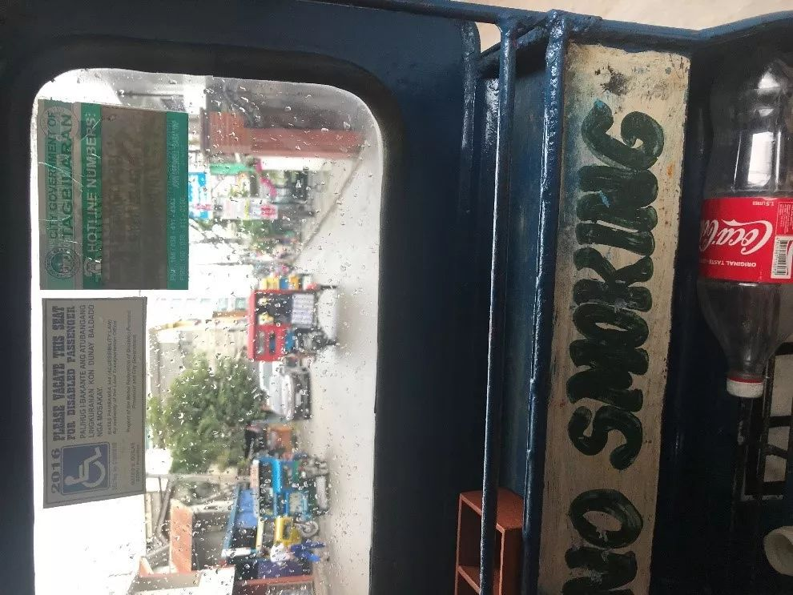
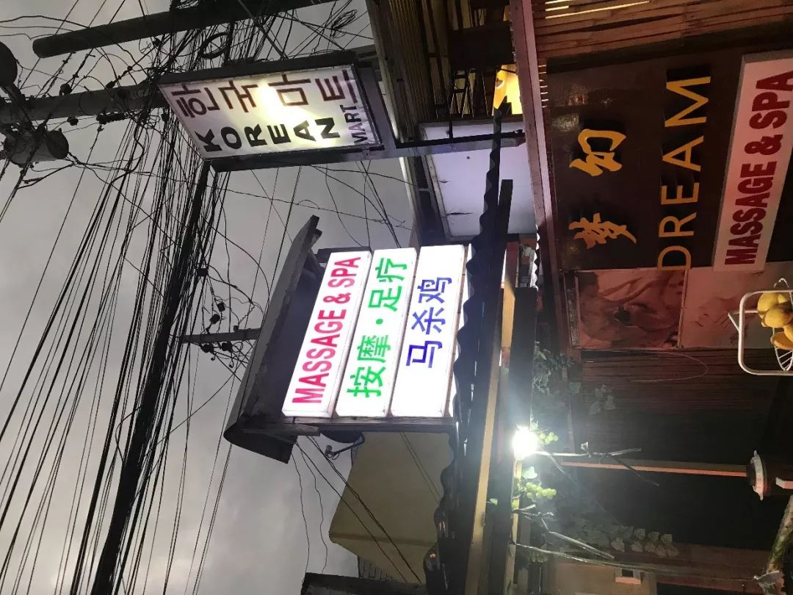

收录于合集
在社会科学的世界中，菲律宾始终是一个独具魅力的案例。它的经济发展、社会关系、政治文化长期吸引着众多学者的关注。而政文观止的朋友圈中也有不少以菲律宾为课题的同侪和师友。2019年2月，小编作为政文观止Poliview特派观察员前往菲律宾调(游）研（玩）。在一周的时间内，我们以宿务市区为中心，深度游历了薄荷、邦劳、卡比劳、墨宝等岛屿。由于任务在身（其实是因为胆小），当同伴上天入地跳海潜水时，小编更多地在观察和思考这个熟悉而陌生的国度。下面就和大家分享一些见闻和体会。
菲律宾巧克力山风光
首先谈谈菲律宾的经济情况和旅游产业。从近年的数据来看，菲律宾的人均GDP在3300美元左右，基尼系数约为0.4，通货膨胀率和失业率分别为3.2和5.7。换言之，菲律宾是一个既不发达也不平等，但仍然可以保障人民基本生活的国家。对于亲历者而言，最直观的感受就是菲国低廉的物价。包含机票在内，一周自由行的人均基本花费不会超过5000人民币。与此同时，宿务市区的繁华和喧嚣比起国内大城市也并不逊色，从高大上的商圈到接地气的路边摊一应俱全，除了偶见几个乞讨的儿童，这里看不出任何颓靡和衰败的迹象。置身其中总会让小编感到恍惚而熟悉，似乎来到了低配版的海淀黄庄。当然， 郊区和乡村则完全是另一番景象。仅从体型来看，离市区距离越远的菲国人民便越来越消瘦。同样消瘦的还有乡间路边的各种动物。三五成群的流浪狗散漫而又羞怯，它们似乎不用担心被猎去果腹，但也自知无法奢求行人的赐食。
旅游产业对菲律宾经济的重要性自无需多言。在这一点上，菲国人对于自然资源的保护、利用和开发很值得我们学习。一方面，菲国几乎将旅游产业伸向了每一处稍有卖点的风景和地貌，甚至包括眼镜猴、沙丁鱼、海龟、蜜蜂、萤火虫等细微之处。另一方面，菲国又特别注重避免现代工业对自然资源的破坏、污染和打扰。譬如在笔者亲历的风景区中，出海无一例外全部是渔家小船甚至是轻舟独木（因此有的时候速度还追不上海龟）。更为重要的是，菲国旅游产业的市场定位非常精准。相比于国内山川动辄以雄伟或秀丽自居、人文古迹又总是引经据典来加持，菲国的旅游资源几乎统统都以浪漫和戳少女心为卖点。也正因如此，在这里很难见到横扫全球的中国大妈（绝无贬义），而年轻游客却络绎不绝。当然，中国游客仍然是最大的金主。因此当地人总是时不时冒出“皮皮虾”、“马杀鸡”、“打表”的中文词汇，而银联、支付宝、微信、携程也已惊人的速度在当地生根发芽。当然，当地人开口要价有些抽象，小编的同伴经常是对半砍价，甚至最后直接减个零也能成交。
薄荷岛海域风光
下面谈谈菲律宾的社会关系。强大的社会势力和私人关系网络究竟是会孕育“社会资本”进而“使民主运转起来”，还是会造就“强社会中的弱国家”的悲剧？政治学家对于这个问题的争论已经持续了数十年。菲律宾无疑为这个问题提供了一个非常好的观察样本。在整个旅途中，小编去过的每一家酒店、餐厅和商城都有自己的警卫， 但不知幸还是不幸，小编从来没有见过维持秩序或执行任务的警察。 在风景区，黄牛和“小黑”（无证导游）的数量是官方工作人员的若干倍，而且往往是 家族世世代代作此营生。 还有一点很有意思， 那就是一向健谈、热情的当地人似乎唯独对周边的种植园主讳莫如深，甚至不愿直呼其名。
更为直接的映像是当地的“图图”车（类似于电动三轮车）似乎被一个“纪律严明”的私人组织控制了。当遇到落单的“图图”车时，砍价方式详见前文。 但如果有一群“图图”车的话，若继续多嘴则很可能会被不明身份的大哥大盯上。然后他就会很拽地告诉你这条街上的最低价都被他承包了，休想再得便宜。 而周围的“图图”车夫也确实对他唯唯诺诺。更令人细思恐极的是一些“图图”车夫收入微薄，但却明显一副磕嗨了的神态，这不得不让人怀疑其背后组织的复杂和神秘。 当然，这一切都是小编的推测。

随处可见的“图图”车
最后说一说菲律宾人民的价值观和文化。 在政治文化的测量中，菲律宾一般被认为是一个传统观念较强、自我表达意识一般的天主教国家 ，相比中国而言要保守有余而功利不足。从小编的直观映像来看，这里的人民确实更为朴素、安详而自在。 当地人谈论最多的就是吃吃喝喝“马杀鸡”，很少有人关心政治大事或为自己的前途发愁，街头也很难见到其他实行选举式民主国家常见的竞选海报。 不少当地人认为从事基础的服务业就是相当体面的工作了。小编曾偶遇一名混血的出租车司机（并非富二代赚外快），他的华裔父亲当年下南洋，餐风露宿、辛苦经营才小有所成，但这位儿子似乎更喜欢平凡而普通的生活。当然，相应地这里的科学和教育氛围也比较薄弱。 临行前友人（即政文观止Poliview比较- 历史分析板块主编）曾托小编寻觅当地的书籍和文献，但直到最后一天小编才终于找到一家书店。然而过分的是这个所谓的书店其实百分之七十的空间是一些简单的文具，而为数不多的书籍基本也都是生活类的，寥寥几本政治类书籍还基本都是政治家自己写的。 这让不免小编心中些许失落，但更多的却是一种莫名的欣慰。

令人眼前一亮的中文招牌
说回本文的开头，人们为什么关心菲律宾？我想其中很重要的一个原因是“怒其不争”吧。 坐拥丰富的自然资源和惊人的人口红利，又有令人倾羡的早发优势和西方诸国的加持，菲律宾在很多人眼中都应当成为东南亚的明珠，而绝非今天的未富先安。 然而正如小编多次和友人开玩笑说道，不是每一个博士生都会从早到晚苦心钻研论文，也不是每一个国家都会拥有崛起或复兴的宏愿。发展从来都是一个相对的概念，拿下A刊的博士生和成为强权的国家一样，永远都只是少数，我们总会在某一刻和自己妥协。然而，只要我们仍然能为社会科学研究道路上的点滴发现而感到惊喜，仍然能在枯燥的四年或更长时间内让自己变得充实而感动，也许我们就会和小编遇到的那些真诚微笑的菲国普通人一样，明白人间值得。
注：关于这段旅程的非学术手记和菲律宾超强图文攻略，敬请关注小红书@我不听我不听
撰文：陆屹洲
审读：杨端程
编辑：吴温泉


政文观止
微信扫一扫赞赏作者 __赞赏
已喜欢，对作者说句悄悄话
取消 __
发送给作者
发送
最多40字，当前共字
上一页 1/3 下一页
长按二维码向我转账
受苹果公司新规定影响，微信 iOS 版的赞赏功能被关闭，可通过二维码转账支持公众号。